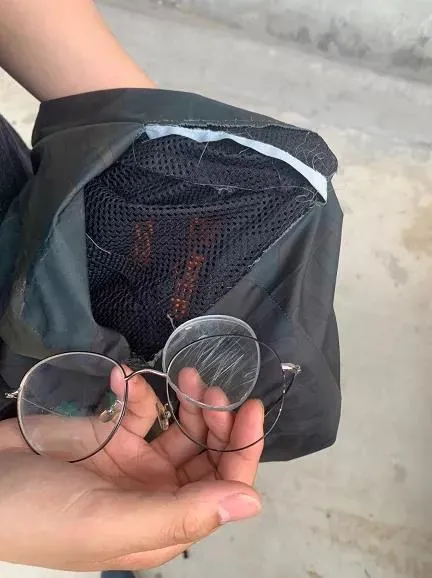
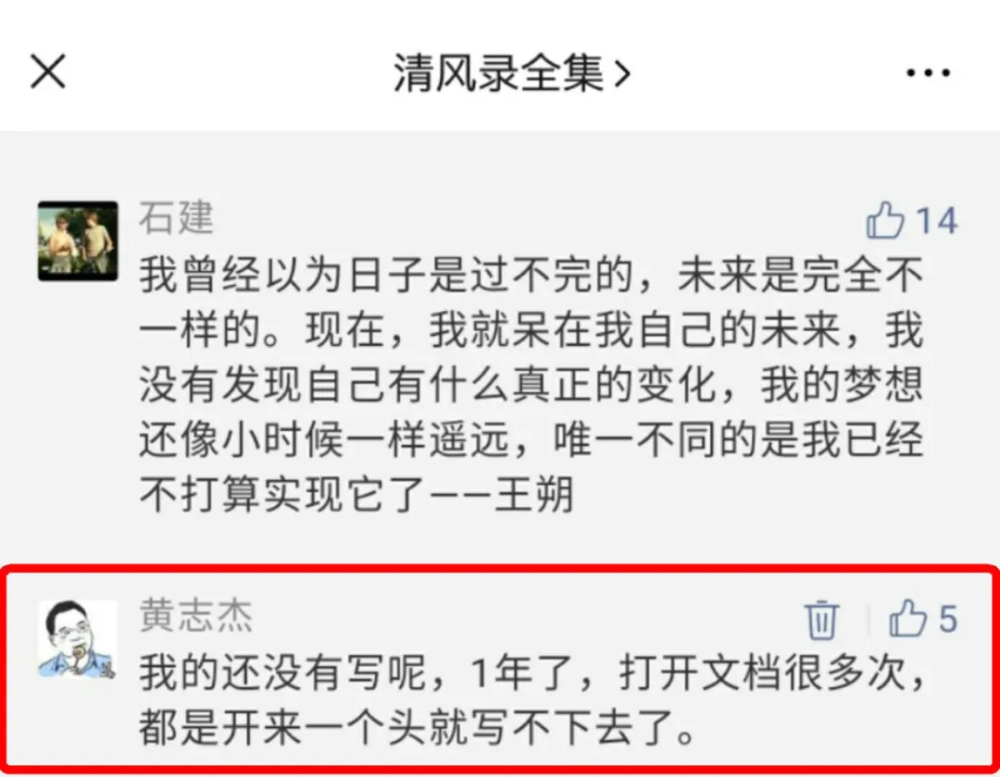

十年一问
建一个坝，不是想让它冲走自己的亲人
这是一篇迟交多年的作业
十年之前。
2010年8月5日，我的同事，《瞭望东方周刊》调查记者王立三与《南方周末》调查记者朝格图，正在东北某个新闻现场采访。
王立三常驻东北三省，听闻吉林桦甸大河水库发生了洪灾、牺牲者众、情况不明，报题获批后，背上包，赶往桦甸。朝格图得知后，也旋即赶往。
最先到的是大河水库下游第一个受灾村庄大河村。这里刚刚经历了一次“500年一遇”的洪水，全村被洗劫一空，家徒四壁。灾民赵大爷家里的牛被洪水淹死了，主人正好杀了牛充饥，也以此来“招待”王立三和朝格图。
吃完饭之后，两位记者开始沿着洪水的方向，访问各个村镇：大河村，钓鱼台屯，靠山村，常山镇，南河沿，太平庄……每个村核查死亡人数，并调查这场洪水由来。“村民和电影里对待八路军那样维护我们，和我们说真心话，替我们保密。”王立三说。
所见所闻，触目惊心。
两人统计到，洪水发生在7月28日，至少31人死亡或失踪：大河村1人、钓鱼台村5人、靠山村12人、南河沿村13人。洪水是上游的常山镇大河（小型）水库溃坝造成的，决口之后，半小时内，千万立方米洪水汹涌而下，所经村屯，水头处民房瞬间夷为平地、所有民房进水、所毁农田一望无际。
半小时内，许多家庭阴阳两隔。见到遗体时，往往是在多日后的下游杂物之中，全身肿胀不堪，有的连头发都没了。
更心痛的是，这是一场灾难，更是一场责任事故。灾难本可避免。
溃坝之前一年，这个水库被列入《全国病险水库除险加固专项规划》，获得财政资金数百万元；
溃坝之前20多天，大坝的加固和闸门设备更换工作完成；
溃坝之前10天，省气象部门发出预警，桦甸市宣布进入“主汛期”，要求各部门“立足于防大汛、抗大洪、抢大险，切实落实各项防汛抗洪救灾措施，全力以赴做好防汛抗洪救灾工作。”
溃坝之前一周，大河水库试图开闸泄洪，发现闸门系统存在缺陷。当时水库涨水到24米多，准备泄洪时，新安装的电动设备无法开启闸门，而兼容的手动摇柄根本摇不动。电话打到桦甸市，技术人员带来粗电缆，才将闸门提高到30厘米的泄洪高度，之后，大坝新安装了一套专用电缆。
不过，最终，大坝还是因为无法提起闸门泄洪而崩溃。
王立三与朝格图，沿着洪水冲过的地方，一步步探问着。
他们得到两个方向的消息。
一方面，7月31日，桦甸市委将常山镇党委书记潘学举、副镇长宿阔、镇水管站站长钱玉民免职，原因是：潘学举因身体不适应指挥抗洪救灾，宿阔、钱玉民因抗洪救灾中严重失职。另一方面，地方政府网站的说明将洪水更多地归因于“普降暴雨”，对没有提闸泄洪避而不谈，灾民认为这是夸大天灾。同样遭遇水灾，同属于桦甸市，拥有9座重点水库和大塘坝的桦树乡，没有一个人被淹死。因为当地领导和铲车守在大坝上，发现水库水太大泄不了洪时，立即用配备的钩机挖闸泄洪。
当王立三与朝格图走到靠山村一个灾民家时，灾民怒不可遏：“人都死了，记者采访还有什么用！”因为声音太大，引起了村里一个干部模样的人注意。
王、朝两人想甩掉这个盯梢的人，就到主路上准备拦车离开。不过，一辆警车先行赶到。三名警察要求查两人的证件，两人不想暴露记者身份，不愿出示。
朝格图：“我们是这个国家的公民，也没做任何犯法的事，我们有权利在自己国土里走动吧？”警察：“刚才有村民报警，说你们形迹可疑。”朝格图：“你们依据什么要查我们？”警察说，根据治安管理条例、刑事诉讼法，警察有权看别人的证件。朝格图反问：请问是哪条哪款？警察一时语塞。
僵持几十分钟后，第二辆警车赶到，说已经有证据可以抓人。又僵持一阵，一位警察接到电话后，两辆警车掉头走了。
两人拦了一辆救灾车，搭到常山镇，采访之后，到一个小饭馆小包间，点了两个小菜准备吃饭。菜还没有上，一位干部（当地宣传部副部长）进到小包间，然后又出去，带了十名左右警察。
再进小包间，警察不由分说，将王立三、朝格图反剪双手。“我们反复挣扎，他们越拧越紧。”一路押往常山镇派出所。出店门时，王立三见点的菜开始上了，说，“那你们让我把菜钱结了吧。”“这个你不要管。”其中一人说。
警察看了王立三的个人身份证，骂道：“你是哈尔滨的，哈尔滨的还牛逼，牛逼个啥？”进了派出所一个房间，警察开始搜查两人。王立三想护住背包（里面有录音笔和手机），被推到凳子上，折断了凳子。朝格图见包里的采访本被拿出来，着急了，“别动我们的东西”，被押着顶到了墙壁上。
从两人随身的工作证、记者证、身份证、介绍信，警察和宣传部干部确认了他们的身份，拿走了王立三的录音笔、手机，并拿来一根数据线，调阅手机内信息。
在厕所，王立三试图和跟着的警察说两句话，警察骂道：“*你妈，别磨唧”。
僵持两个小时后，王立三给吉林宣传部有关负责人打了电话，进行沟通。两人的单位领导也分别迅速与当地沟通。桦甸宣传部负责人接到上级电话后，表示两人可以走了。“这只是一个误会。”
现场负责人向王立三、朝格图道歉，但两人并未接受。王立三还记得那个“道歉”：“他们毫无诚意，说什么‘我向你们道歉好吧，你们记者是爹好吧，我们这里是灾区，你们记者还来添乱。’”
两人离开了派出所。王立三的录音笔里原来有16段录音，拿回来时，他看了一眼，仍然还有16段录音，就不以为意。直到回到休息的地方，打开录音笔声音，却是“爱得深呀爱得真，这段情无悔……”原来，采访录音已经被替换成为田震的《水姻缘》等歌曲。
听着歌，朝格图把自己的嗓音弄得尖细，跟着哼唱。王立三不禁苦笑，笑弯了腰。
“和他们讲法律，他们就开始耍流氓。”朝格图说。
两人买了两袋面粉，再次返回吃牛肉的村民家，作为回赠。随后离开桦甸。
次日，8月7日，桦甸市宣布成立由当地纪委、公安等部门以及吉林省水利专家等组成的联合调查组，对大河水库溃坝的真相进行调查，“将给受灾群众一个交代”。
后来，《瞭望东方周刊》刊发了王立三的报道《吉林桦甸溃坝之痛》；而朝格图写的《常山溃坝：一次彻底的防汛失败》未能在《南方周末》发表。
离开桦甸后不久，朝格图与另一位记者朋友孙旭阳到河南采访。采访中，他一直怏怏不快，并告诉孙说，自己的抑郁症可能发作了，很难受。“我被反剪着按倒，第一次发现自己这么无能。”
孙旭阳说：“你无能什么，你又不是散打冠军，就一个小记者，打不过警察有啥无能的。”
朝格图对报社的“不仗义”也很窝心。本来，对桦甸受辱经历最好的回应，就是披露他采集到的真相。然而，虽然朝格图再三要求，稿子一直无法上版。他又提议在网站上发个电子版，也被搪塞虚应了过去。孙旭阳回忆当时见到的朝格图时说：“这让他开始怀疑工作和生活的价值。他一直找不到可以平复自己屈辱感的答案**。”（朝格图的桦甸特稿，见《难友朝格图》）“那些敏感又有些骄傲的记者，踏遍千山万水，写遍民生国计，职业带来的那点荣耀，其实脆弱得可怜，一个乡村派出所协警的擒拿，就足以让他们跌入尘埃**。”（见孙旭阳《朝格图的河南往事》）
在桦甸的遭遇，成为朝格图的一个心结。他一直很自责，认为对不住灾民们。五年后，2015年夏，王立三与朝格图最后一次相聚时，朝格图还说：“我们吃了他们的牛肉啊！”
那次小聚人不少，我恰好也在。此前，我已经离开了《瞭望东方周刊》，辗转参与“无界传媒”的创办。已经不得不从《南方周末》辞职的朝格图，在休息近两年之后，给无界发来了简历。
年初，有一天，我打电话给朝格图：“呐，怎么还没来上班？”
拿起电话时，想起他上一次和我见面时的一句话：“十年媒体生涯，尤有写字冲动。”在当时，老记者们被新媒体冲击得哀鸿遍野，环境又是那么冷若寒噤噤若寒蝉。这句话，包裹着一个老兵的冲动与好奇心，让我心生欢喜和敬意。我们团队不少人知道，多年来朝格图一直在与抑郁症抗争；也知道，某些抬着理想主义旗号的“领导”冷血地放弃了多年奉献热血的他。但经周边了解和评估之后，我们想，现在他已经恢复了，做自己热爱的工作更能帮助他。同气相求，同声相应，来吧。
朝格图电话中说：“哈哈，我以为大无界不要我了呢。”原来，当时HR衔接中出现了疏漏，导致他一直没有接到HR电话。我连忙去催。再次在朝阳门泛利大厦见面时，我和朝格图拥抱了一下。这是我和他第一次，也是最后一次拥抱。
2015年8月13日，重新出山数月之后，朝格图终于没有扛过抑郁症，在居住的小区跳楼自尽，结束了10年调查记者生涯。时年36岁。
那晚，我一直坐在泛利大厦8楼的会议室写短短的讣告，翻看着他过往十年的一篇篇作品，眼泪慢慢流出。以前，我写文章时总是保持常人难有的冷静，自从那天之后，我写作时常常不由自主流下泪来。
朝格图人缘很好，数百名北京媒体记者赶到北京东郊殡仪馆参加追悼会。这是我从未见过的媒体界场景。气氛很特别，我感觉，我们既在告别朝格图，也在告别一种说不清道不明的什么。
桦甸遭遇，并不是朝格图离世的直接原因，但一定是他记者生涯念念不忘的一个遗憾，而且对他触动很大。有一次他反过来开导一直坚持在一线的王立三：“想想（桦甸）那事算个屁呀，但有时候，那些想法在脑子里停不下来。”
十年之后。
2020年4月18日，河南原阳县一个小区外堆放的土方中，陆续发现4名5至11岁儿童遗体。
这一度引起我震惊。难道是又有变态杀童狂魔出现？在同一时间，我恰好接到来自甘肃一位朋友的电话，他告诉我说，他的侄儿、侄女两个孩子，以及他的嫂子，被人残忍杀害，烧死后，埋在了沙漠之中。警方刚刚才找到遗体。（这个事情还没有媒体报道，我也还没有时间写作）
随后的调查排除了这个可能。当地联合调查组初步判断，事故中的4名儿童“从围挡的豁口钻入的可能性较大，有可能是在卸土下方玩耍时被土方压埋”。建筑工程负责人、挖掘车司机等涉嫌重大责任事故犯罪的8名嫌疑人被刑事拘留；又因为项目被发现没有建筑施工许可，属违法施工，原阳县住建局党组书记、局长和安全股股长被免职。该县还启动了对县城管局党组书记、局长的问责程序。
这个免职安排，一如当年桦甸。
4月21日下午，上游新闻、红星新闻、新京报三家媒体记者在原阳县一处陵园的路口，被十多名不明身份的人拦住。上游新闻记者在拍摄时被多人强行控制，手机被抢走；红星新闻记者被暴力推搡、殴打，正在拍摄的手机也被抢走，衣服被撕烂、眼镜被踩毁；新京报记者被推搡、阻挡并被反扣手臂、掐脖子。“你再说一句，我就扇你……”
现场有至少一名原阳县政府工作人员在场，但并未上前制止。一名女工作人员说：“没有政府的允许，不能进去采访。你们为个采访，值得吗？”

后来，手机由当地县委宣传部一位副部长用一个牛皮纸袋包装后归还，但却被刷机，内容被清空，连手机通讯录都没了。
记者问：“手机是谁送给你们的？”
该副部长说：不认识。
“殴打记者的人是谁？为什么拦阻记者？”
“不清楚。”
“为什么把手机刷机？”
“不清楚。”
“接下来将怎么办？”副部长说将展开调查，但对于如何调查，又沉默了。当事记者表示，“他们过来只是给我们说了道歉，但是因为什么事情道歉，他们没有说”。
此前，这位“一问三不知”的副部长说，打人的是死者家属，但当天就遭到记者否认，因为到那里采访恰恰是经过家属们同意的，记者们和家属们也从未发生过冲突。当晚，河南新乡市委书记张国伟就记者被打事件表示：“一定彻查，万一有人触犯了法律，依法办事。”
此后，当地通报说，“视频中的9人都是原兴办事处工作人员，他们按照统一工作安排成立了三个专班，起工作职责是帮助家属料理后事，并持续对三个家庭进行帮扶，同事协助心理疏导师对家属进行心理安抚。”
这样一群动手打记者的凶狠之人，却在做死者家属的“心理安抚”工作。更接近于事实的恐怕是心理吓唬。
原阳故事，一如桦甸往事重演。十年之前与十年之后，故事之所以如此重叠，如此没有新意，是因为我们很多地方一直在复制类似的思维模式：遇到什么事情，不管大小，不惜代价，先把盖子捂住；问题还没有解决，先解决提出问题的人。
这种思维模式的特征是前现代、非文明。盖子终究是捂不住的，用十个谎言掩盖一个谎言，只会带来更糟糕的局面。尴尬在于，大家都知道这个道理，但又往往只计利害不问是非，到最后，连眼前利害都计算不清。在这个文明不断进步的时代，因为这样的思维模式和利害计算，一个本来可以坦然公开的小事件，往往折腾成翻江倒海的大事件。
十年之前，王立三记者的录音笔被用同等数量歌曲替换；十年之后，记者们的手机被直接刷机到空白一片。今天的记者们，失去了把自己的腰笑弯的机会。
不知道这是进步还是退步。
“岂有文章倾社稷, 从来佞幸覆乾坤。巫咸遍地逢冤狱, 上帝遥天不忍闻。”十年前的桦甸和十年后的原阳，这些事情绝非记者个人一己私事，而是一次“实事求是”集体共识的崩塌。想想最近以来我们的经历。如果不是一开始就动用强力去捂盖子，如果始终坚持实事求是，我们今天面对的许多事情都会有大大的不同，所遭遇的损失也不会如此之大。
没有谁是一座孤岛，我们每一个人，都在为真相蒙尘而默默埋单。
朝格图在那篇未能见报的桦甸报道中结尾一段写道：“不必依赖数据、防汛指挥的专业知识，村民们仅仅需要常识就可以判断，这是一次彻底的防汛失败。在水患并不严重的东北，它的深层原因或许是多重的，不过许长友看来，将三个阀门提更高并不困难，‘建一个坝，不是想让它冲走自己的亲人。’”
这样一个特稿结尾，可谓完美。
只不过，如果我们换一个视角，对于记者个人，来自原阳现场的那一句“为个采访，值得吗？”是灵魂一问。我也经常被人问起，“呦呦鹿鸣怼天怼天怼空气，图个啥？”
朝格图离世后，一位同行如是感慨：“我不禁假想，虽然这是一种病，但如果朝格图不读北大，不读哲学，或不从事新闻，不去执著的思考和追逐生活和世界的真相，会不会是另外一种人生呢？”
朝格图本科毕业于四川大学哲学系，硕士毕业于北京大学哲学系，对哲学有研究。他有一篇旧文《焊接断裂的传统与剧变的社会》：“呈现在过去一个世纪的历史镜像中，偶像的黄昏不断来临。……孔家店被毁的同时，人们心中最重要的部分已经断裂。每个人心里都残留着一个废墟，跟这个时代的一样大。”
2016年，一些同行朋友建了一个公众号“清风录全集”，发布了几十篇回忆朝格图的文章，我也被组织者点到，但一直没有写。加缪在《西西弗神话》开篇就劈头一句：“真正严肃的哲学问题只有一个，那就是自杀。判断生活是否值得经历，这本身就是在回答哲学的根本问题。”而我，不仅对抑郁症一无所知，对哲学也是一知半解。所以，总觉得有什么拦着我。

今天写作本文，是一篇迟到的作业。
我想，我之所以可以写了，一是因为看到原阳事件中还有那么多记者（红星新闻、上游新闻、新京报）坚持在现场，十年之后，薪火不绝，倍感振奋；二是因为看到记者被打之后社会各界奋起抨击，少有的团结与共识，倍感欣慰；三是，对前面这段话有了一个答案，并努力以此实践经年：
确实，“每个人心里都残留着一个废墟”，而且，“跟这个时代的一样大”，但，也正是因为如此，才需要我们日拱一卒，去重建它。我们的骄傲要彼此支撑，但首先要有骄傲；我们的温情要互相传递，但首先要有温情；我们会被废墟上的石头打到，会被控制废墟的流氓禽兽按倒，只要我们护住心中的那团火，周围就仍然有光；每一个至暗时刻，都是光明的开始；这个世界，仍然有无数种可能性，唯有“用尽全力”一以贯之。
每一次拱卒，都有难以估量的价值，因为它意味着草蛇灰线，不绝如缕。一年前，我在呦呦鹿鸣写了一篇答问自述《理想再温和，也是理想》，在此引用结尾如下：
“我依然没有‘改变我所不愿的世界’，没有实现少年时那个支撑我的理想，也依然不富裕，我只是，与自己和解了。如果理想主义者是被世人永远嘲笑的那一类人，我愿意永远被嘲笑下去。人们终将发现：即便卑微如蝼蚁，日拱一卒也是莫大的力量；即便身处铁屋暗室，心中亦可光明如日月之炳炳。”
“图什么？”不知我者谓我何求。
“值得吗？”值得。
20200423，呦呦鹿鸣
原网址: 访问
转载请注明来源，欢迎对文章中的引用来源进行考证，欢迎指出任何有错误或不够清晰的表达。可以在下面评论区评论，也可以邮件至 memo_hanabi@outlook.com
文章标题:十年一问
文章字数:5.5k
本文作者:呦呦鹿鸣
发布时间:2020-04-23, 16:12:10
最后更新:2020-04-23, 16:17:48
原始链接:https://mmspace.now.sh/ten-year-question/版权声明: "署名-非商用-相同方式共享 4.0" 转载请保留原文链接及作者。